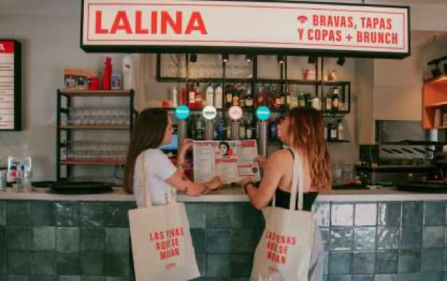

La Lina Chamberí
Not from our listsOpen daily
Menu fit: many dishes fit. ~18 dishes
100% gluten-free
A lively tapas bar whose entire menu is gluten-free. In the morning it turns into a brunch spot.
What to order
- Where
- C. de Luchana 7
- Eat
- Verbena toast (avocado, hollandaise), salmon toast, salmon tartare, Caprese toast, waffles, torrija, plus fried squid, chopitos and boquerones from the tapas menu, all gluten-free.
- Drink
- Fresh orange juice, coffee with oat or soy milk. It's also a cocktail bar, but the brunch menu has no alcohol.
C. de Luchana 7Brunch Mon–Fri 9:00–13:00, Sat–Sun 10:00–13:00 · book online or by phone+34 910 25 52 47